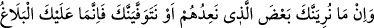
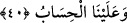

Kemâl Hocendî der ki:
Çalış, gayret et ki vücûd hazînesini elde edesin
Ki taleb etmeden maksûd cevherini bulmak mümkün değildir
40. Biz onlara vâdettiğimizin (azâbın) bir kısmını sana göstersek de veya (ondan
önce) senin canını alsak da sana ancak (Allah’ın emirlerini) tebliğ etmek düşer.
Hesap yalnız bize aittir.
Ey peygamberlerin en üstünü! “Biz onlara” Mekke müşriklerine “vaadettiğimizin”
azâb, deprem ve musîbetlerin “bir kısmını sana” hayatında “göstersek de” ki bu durum
senin düşmanlarından intikamını alır.
Düşmanının ölümünden sonra sana ağlamak gerekmez
Ki düşmanın ölümünden sonra artık sen yaşadın
“Veya” bunları göstermezden önce temiz ruhunu kabzederek “senin canını alsak da”
sen üzülme! “sana ancak (Allah’ın emirlerini) tebliğ etmek düşer” Yani sana düşen,
risâleti tebliğ ve emâneti yerine teslim etmektir, başka değil. “Hesap” yani kıyamet
günü yaptıklarının karşılığını vermek de sana değil “yalnız bize âiddir.” Onlardan
şiddetli bir şekilde intikam alacağız! Onların yüz çevirmesi seni üzmesin, azâba duçâr
edilmeleri konusunda acele etme.
Bu ifadenin benzeri şu âyettir: “Biz seni onlardan alıp götürsek de yine onlardan
intikam alırız.” (ez-Zuhruf, 43/41) Yani sen ölsen de hayatta kalsan da onlar Allah’ın
azâbından kurtulamazlar.
et-Te’vîlâtü’n-Necmiyye’de şöyle denilir: “Biz onlara vaadettiğimizin” azâb ve
sevabın “bir kısmını” vefâtından önce keşif ve müşâhede ile “sana göstersek de”
Nitekim Hz. Peygamber (s.a.) aşere-i mübeşşerenin ve başkalarının cennete gireceğini
haber vermiştir. Yine:
“Babam nerede? diyerek babasının nerede olduğunu soran kimseye:
“Benim babam da senin baban de cehennemliktir.”[156] diye haber vermiştir.
Yine O (s.a.):
“Cenneti gördüm, içinde falan kimse vardı. Cehennemi gördüm orada falan kimse
vardı.” buyurmuştur.
“Veya” onların hallerini sana göstermeden önce “senin canını alsak da sana ancak”